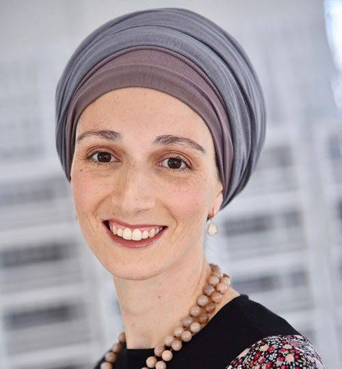

Being a Jewish woman today is a lot. It's also more significant than you've ever been told.
The Rise of the Holy Feminine in the Pre-Messianic Era is a 100% free series of ten short classes on the Torah's deepest secrets for women living at the threshold of Redemption.
Free 10-part series with Rebbetzin Tamar Taback Get Free AccessMaybe you've found yourself asking…
These aren't questions to be quieted. The Torah has answers, and they're more beautiful than you've been told. This free series is where Rebbetzin Tamar begins to share them.
Deep Torah that fits into a real woman's real day.
No homework, no prerequisites, no long lectures. Just ten short, warm classes you can listen to on your phone between carpool and supper.
No cost and no catch. Enroll and all ten classes are yours.
Short enough to finish in one sitting, deep enough to stay with you all day.
Clear and accessible. Listen while you drive, cook or walk.
Each class builds on the last. Take one a day, or all ten in an evening.
A roadmap for women who want to live deeply, connect truly and rise into their fullest potential.
Why women are central to Redemption, and how that clarity can turn shame into light, all within our mesorah.
We're in the "Erev Shabbos" of world history: messy, but unstoppable. Discover the secrets of Redemption carried within you.
Why the moon was made small, and how the feminine rising is a recovery of original brilliance.
A story of longing and persistence with an unfinished ending that depends on us, and why mitzvos are the currency of Redemption.
Why every descent leads to a greater ascent, and how masculine and feminine, face to face, become the crown of Redemption.
A gentle introduction to P'nimiyus HaTorah: what the Sefiros are, and how these teachings transform our lives, marriages and avodah.
The Arizal's map of how the feminine regains her light, and how to live in the transition between levels.
As women rise, marriage can rise too. The feminine gift of receiving, the new gift of giving, and the secret of "sharing a crown."
From Sarah to Esther, how the Imahos light the path for our generation.
100% free · 10 minutes a class · Instant access
"I tell people I wasn't awake until I did the Rise Series. I can't fathom how I could have lived for 70 years and been asleep."Chaya Yehudis Dank
I felt that thirst but never dreamed I could learn all these secrets that just feel like I am finally back home. It changed me and the entire family.
Breindy RothI feel it all seeping into my bones and essence. I can't even begin to tell you how much you've enriched my life.
ChanieWhat you are teaching is so authentic, clear, pure, Torah-based and intellectual, as well as heart and soul based. It is really filling me up in so many ways.
Baila FischerI feel so much more confident to share my thoughts with my husband without apologising, justifying or making fun of them. Now we're so much closer.
Rise! studentEvery shiur just feels so personal. I drink every word with thirst and receive new clarity in so many different areas.
Goldie FriedmanMy husband was suspicious about this course in the beginning, and is so on board now. It only took a couple of weeks for him to realise this was IT for me.
Devory Rovner
Tamar is the founder of the Nexus School of Transformational Torah: teacher, facilitator and coach. For twenty years she has been exploring classical, Chassidic and kabbalistic sources in search of answers for the Jewish woman of this generation.
Her gift is taking the deepest ideas in Torah and making them clear, warm and livable, for the woman living a real life today.
Rebbetzin Taback teaches Torah in a way that ignites a love of Hashem and His Torah. May Hashem continue to fan those flames until they become an all-encompassing love and awe of Him in the hearts of many women.
HaRav Aharon Lopiansky shlitaRosh Yeshiva, Yeshiva of Greater WashingtonIf a woman can become a professional in secular subjects, why shouldn't she have access to the depths of Torah that awaken a love of Hashem in her heart?
HaRav Yitzchak Berkovitz shlitaRosh Yeshiva, Aish HaTorahRebbetzin Taback's programs reveal the feminine side of the spiritual in its genuine glory.
Rabbi Akiva TatzYes, 100% free. Enroll with your name and email and all ten classes open for you. No credit card, no trial, no catch.
Each class is about 10 minutes. Many women listen to one a day; some watch all ten in a single evening. Go at whatever pace suits you.
Not at all. The series is designed as an entry point. Tamar explains every concept clearly, and Part 7 is a gentle introduction to P'nimiyus HaTorah for anyone meeting these ideas for the first time.
Jewish women who love Torah and are hungry for more depth: more meaning in their avodah, their marriages and their sense of who Hashem created them to be.
After you enroll, the classes live on the Nexus School site. Watch or listen on your phone, tablet or computer, whenever it suits you.
NetFree blocks videos that show women, so the classes won't play on a NetFree connection.
If you want to go deeper, Tamar's yearlong immersion, Rise! I, begins November 2026. Join the waitlist here.
100% free. Ten short classes. Easy to listen to. Part 1 is waiting for you.
Get Free Access